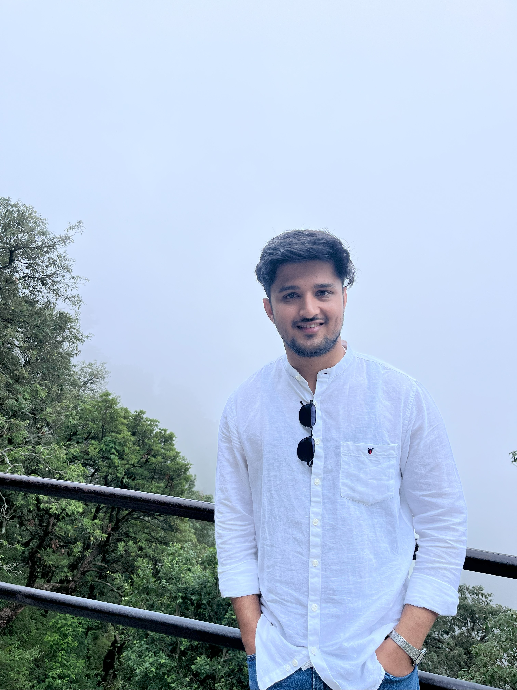

Current
University of Minnesota Twin Cities
PhD Student & Research Assistant
Developing state-estimation and control methods for agricultural robots, with an emphasis on reliable localization and decision-making from imperfect sensor data.
PhD Student · Mechanical Engineering
I work on the part between a sensor reading and a useful decision.
At the University of Minnesota, I study state estimation, sensor fusion, and control for robots operating beyond controlled laboratory conditions.

01 · Research
My research asks how a machine can understand what it is doing when its sensors are noisy, incomplete, or disagree with one another.
I am a Research Assistant in the Laboratory for Innovations in Sensing, Estimation and Control, advised by Professor Rajesh Rajamani. I develop state-estimation algorithms for agricultural robots operating in outdoor environments.
02 · Experience
Current
PhD Student & Research Assistant
Developing state-estimation and control methods for agricultural robots, with an emphasis on reliable localization and decision-making from imperfect sensor data.
2021–2025
Fuel-tank system design & development
Worked on fuel-tank systems for the Dzire compact sedan and Swift hatchback, from concept development through mass production. I also contributed to the Eeco multipurpose van and Super Carry light commercial mini-truck, including work supporting upcoming BS6 Phase 3 / AIS-175 emissions requirements.
2021
B.Tech. in Mechanical Engineering
Built the mechanical-engineering foundation that led to work in automotive product development, dynamic systems, and controls.
03 · Selected work
Current research
Algorithms that combine imperfect sensor measurements into useful state estimates for autonomous operation in field environments.
Publication · 2024
Co-author of Design Consideration of Liquid Fuel Tank System with Low Fuel Filling Circuit Position in Automotive Vehicle.
Read the paperRecognition · 2025–2026
Recognized by the University of Minnesota Department of Mechanical Engineering for excellence in teaching and student support.
University announcement